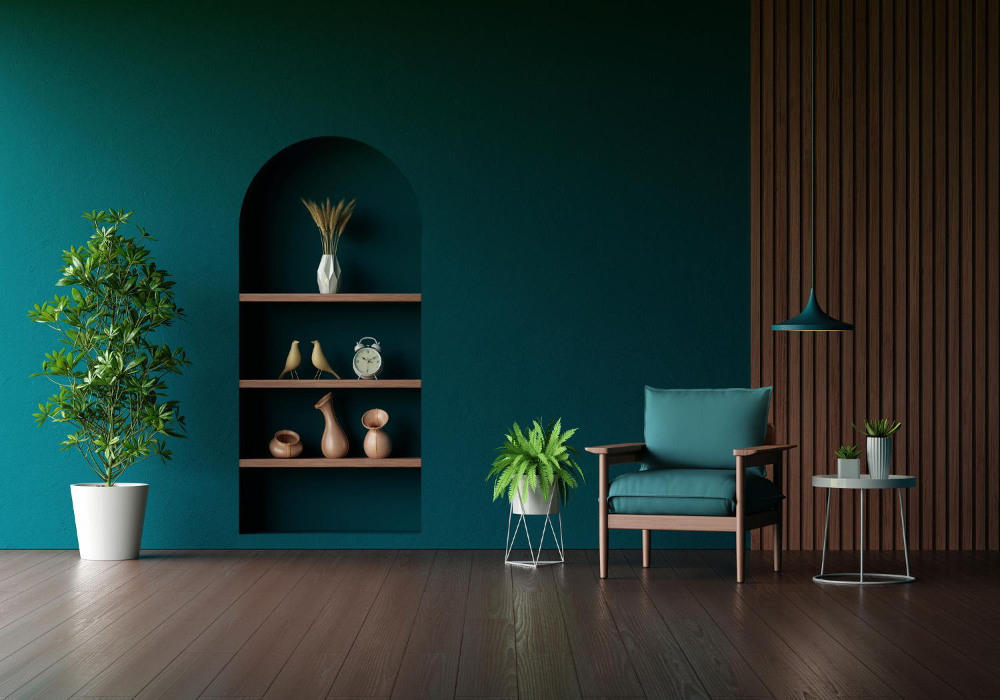
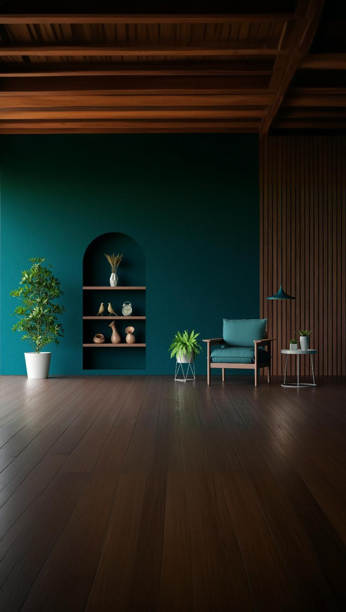

POLYLINE
CONSTRUCTORA
CONSTRUCTORA
Mantente informado sobre las últimas tendencias, tecnologías y desarrollos en el sector de la construcción en Perú y el mundo.
La industria de la construcción está experimentando una transformación digital sin precedentes. Desde la implementación de drones para inspecciones hasta el uso de inteligencia artificial en la planificación de proyectos, estas innovaciones están redefiniendo cómo construimos el futuro.

El sector de la construcción en Perú está adoptando prácticas más sostenibles, utilizando materiales eco-amigables y tecnologías que reducen el impacto ambiental. Descubre cómo las empresas constructoras están liderando este cambio.

Los materiales de construcción están evolucionando rápidamente. Desde hormigón autorreparable hasta madera laminada de alta resistencia, estas innovaciones están cambiando la forma en que construimos edificios más duraderos y eficientes.

El mercado inmobiliario peruano muestra signos de recuperación con nuevas oportunidades de inversión. Analizamos las tendencias del sector, los proyectos más prometedores y las perspectivas para el año 2025.

La seguridad en las obras de construcción ha mejorado significativamente gracias a nuevos protocolos y tecnologías. Conoce las últimas innovaciones en equipos de protección personal y sistemas de monitoreo en tiempo real.

La construcción modular está ganando terreno en Perú como una alternativa eficiente y sostenible. Descubre cómo esta metodología está reduciendo tiempos de construcción y costos, mientras mejora la calidad de los proyectos.

Exploramos las mejores prácticas de construcción a nivel mundial, desde los rascacielos de Dubai hasta las ciudades inteligentes de Singapur. ¿Qué puede aprender Perú de estas innovaciones internacionales?